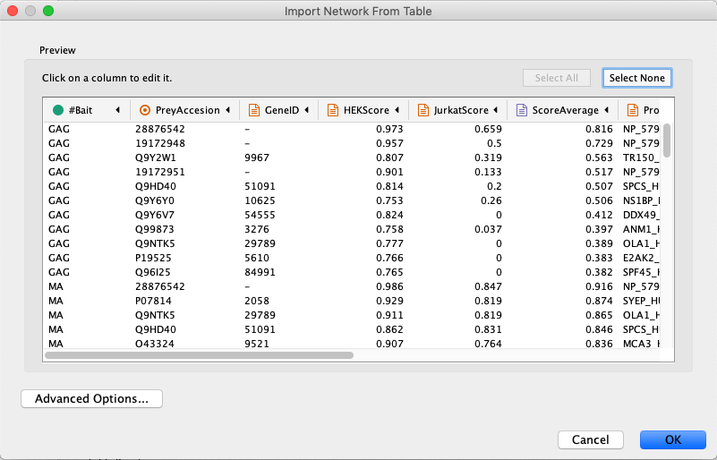
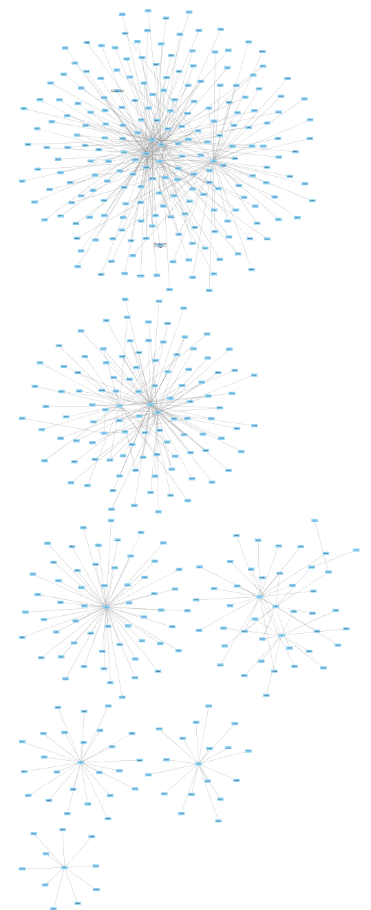
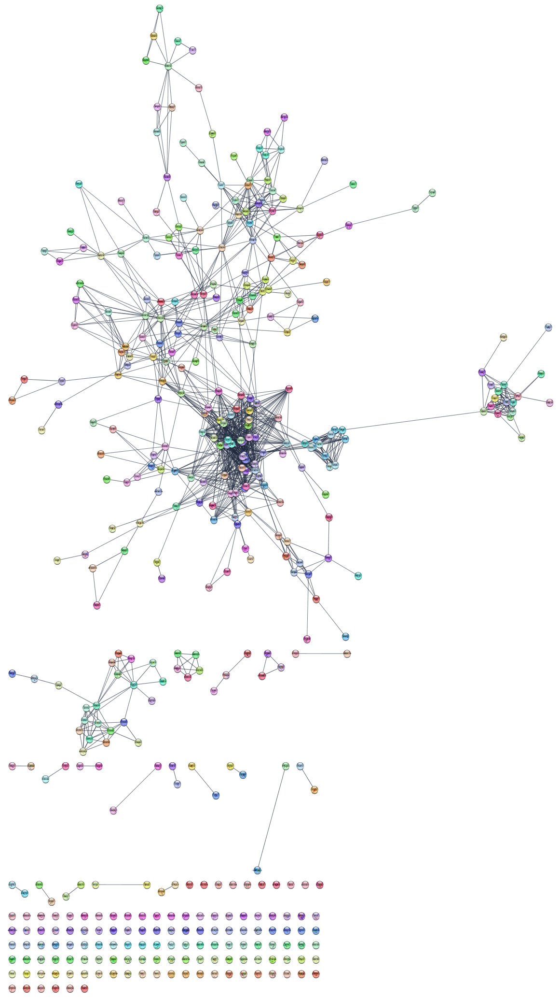
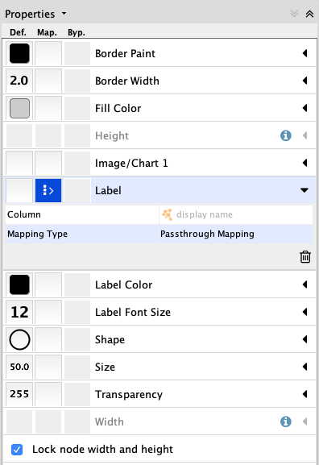
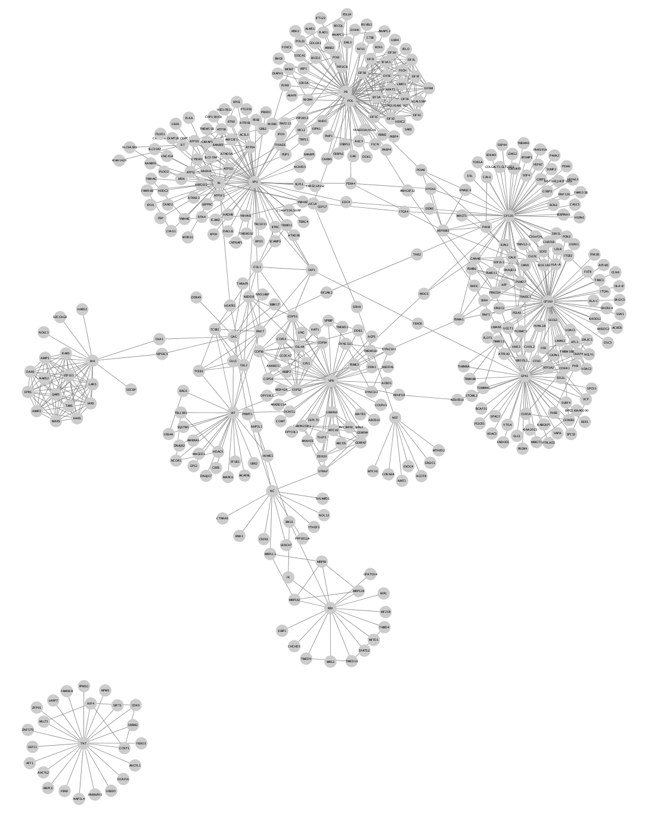
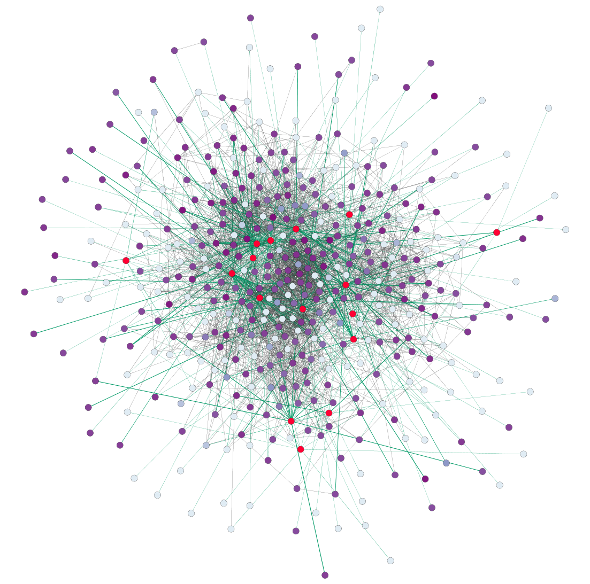

Affinity purification-mass spectrometry network analysis
This protocol describes how to use data from an affinity purification-mass spectrometry experiment to to generate relevant interaction networks, enriching the networks with information from public resources, analyzing the networks and creating effective visualizations.

Background
The data used for this protocol represents interactions between human and HIV proteins by Jäger et al. In this quantitative AP-MS experiment, a relatively small number of bait proteins are used to pull down a larger set of prey proteins.
Note that this tutorial does not describe how to pre-process the raw AP-MS data, the data used here is already scored and filtered.
Setup
This protocol uses two apps, that can be installed from the Cytoscape App Store, or using the
Import Network and Data
- Load the network via
File → Import → Network from File.... , and select the Example data. - In the
Import Network from Table dialog, select theBait column asSource Node andPrey column asTarget Node . - Designate the
AP-MS Score as anEdge Attribute . - For all other data values, designate them as
Target Node Attribute , by clicking in the column header and selecting the red spreadsheet icon. - Click
OK to import the network.
Note: In cases where a Prey node interacts with more than one Bait node, it will have multiple rows of values for the same attribute (for example HEKScore). During import, the last value imported will overwrite prior values and visualizations using this attribute thus only shows the last value.
Import Network and Data
The imported network consists of multiple smaller subnetworks, each representing a bait node and its associated prey nodes:
Augmenting Network with Existing Protein-protein Interaction Data
We are going to use existing protein-protein interaction data to enrich the network, using the STRING database with the human protein nodes as input.
- In the
Node Table , sort the table for your network by theUniprot column by clicking on the header twice. This will sort for the human protein nodes, which are the ones with entries forUniprot . - Select all the relevant entries in the
Uniprot column by selecting the top item, then scroll down and hold down Shift and then selecting the last entry. ClickCtrl+C to copy. - Paste the list of gene symbols into the
Network Search at the top of theControl Panel . SelectString Protein from the drop-down. - Click the
options icon and set the
and set the Confidence (score) cutoff to 0.999. Keep the default, 0, forMaximum additional interactors . - Click the search icon
 to search. The resulting network may load automatically or you will see an intermediate dialog to confirm anbiguous query matches (confirm the cutoff and maximum values, then click Import).
to search. The resulting network may load automatically or you will see an intermediate dialog to confirm anbiguous query matches (confirm the cutoff and maximum values, then click Import).
Augmenting network with existing protein-protein interaction data
The resulting network contains known interactions between the human proteins, with an evidence score of 0.999 or greater.
Merge Networks
To incorprate the new information into our AP-MS network, we need merge the STRING and AP-MS networks. We can use the Uniprot IDs available in both networks as the mathcing attribute.
- Go to
Tools → Merge → Networks... - In the
Available Networks list, select both networks and click the right arrow to add then to theNetworks to Merge list. - Expand the
Advanced Options interface. - In the
Matching Columns field, selectUniprot for the AP-MS network andquery term for the string network. - In the
How to merge columns section, find the entry fordisplay name for the string network. Click on the column for the ap-ms network for that same row and selectname from the drop-down.

Merge Networks
When the network first loads, it will have the STRING style applied. However, because the HIV nodes are not from STRING, they will be white and difficult to see. The layout also makes the network hard to interpret.
- Switch the style to
default to make all nodes visible. - Under
Layout → Settings... , select thePrefuse Force Directed Layout and change the settings as follows:- Set
Default Spring Coefficient to 5E-5 - Set
Default Spring Length to 100 - Set
Default Node Mass to 3.
- Set
- Click
Apply to apply the layout.
Network Visualization
The default style is not so informative in this case, so let's change the style of the network a bit.
-

- In the
Style tab of theControl Panel , click theOptions menu and selectCreate New Style... . Name the style AP-MS. - Change the default node shape to ellipse and check Lock node width and height.
- Set the node
Size to 50. - Set the default node
Fill Color to light grey. - Create a passthrough mapping for the node
Label using thedisplay name .
Network Visualization
The network should now look like this:
Enrichment Analysis
Now that we have a merged network, we can do enrichment analysis on it, using the STRING enrichment tool.
- Select
Apps → STRING → Retrieve functional enrichment . Use the default value (0.05) forEnrichment FDR value cutoff . - When the enrichment analysis is complete, a new tab titled
STRING Enrichment will open in theTable Panel .
Enrichment Analysis
The STRING app includes several options for filtering and displaying the enrichment results. The features are all available at the top of the
- We are going to filter the table to only show GO Process. At the top left of the STRING enrichment tab, click the filter icon
 . Select
. Select GO Process and check theRemove redundant terms check-box. Then click OK. - Next, we will add a split donut chart to the nodes representing the top terms by clicking on
 .
. - Explore custom setting via
 in the top right of the STRING enrichment tab.
in the top right of the STRING enrichment tab.
Visualizing Results
We can create a visualization based on the
- In the
Style tab of theControl Panel , copy the current style to create a new style named AP-MS Jurkat Score. - Remove the STRING enrichment chart by clicking the
Reset charts icon at the top of theSTRING Enrichment tab. - Create a continuous mapping for the node
Fill Color using theJurkatScore column. Select a purple gradient from theColorBrewer palettes. - Switch the deafult node
Fill Color toyellow to highlight the HIV proteins. - In the
Edge tab, create a continuous mapping for edgeWidth using theAP-MS Score column. - Set the width values to a range from 1 to 5.
- Create a
Discrete mapping for edgeStroke Color using theinteraction column. Choose a green color for all interactions of type interacts with. This will color all the interactions in the original AP-MS dataset.
Visualizing Results
We now have a visualization of the network highlighting the ap-ms experimental data (green edges), as well as additional known interactions (grey edges), with node color indicating the Jurkat Score from the data:
Visualizing Results
We could create a similar kind of style for the HEK score, but that only allows for viewing each style seperately. Instead, we can create a combined style, using the enhancedGraphics app.
For this, we will need a new column defining a new attribute that will be used for mapping to the
- In the
Table Panel , click the button forCreate New Column , then selectNew Single Column → String and name itCombinedScore . - In the first cell of the
CombinedScore column, enter the mapping below and click enter. - Your new entry may disappear to the bottom of the column; just click on the column header once or twice to re-sort. Right-click on the new entry and select
Apply to entire column . This will fill the column with the same mapping.
piechart: showlabels="false" range="0,1" arcstart="90" valuelist=".5,.5" colorlist="up:blue,zero:white,down:white;up:purple,zero:white,down:white" attributelist="HEKScore,JurkatScore" labellist="HEKScore,JurkatScore"
Visualizing Results
- In the
Style panel, selectCopy Style... and name your new styleAP-MS CombinedScore . - Create a passthrough mapping for
Image/Chart 1 using the newCombinedScore attribute.
The network is now showing the Jurkat score (purple gradient on the right-hand side of the nodes) and HEK scores (blue gradient on the left). AP-MS experiment interactions are shown as green lines in which the thickness of the line reflects the average score, and interactions from STRING are shown as gray lines.
Visualizing Results
Zooming in on the network, specifically the POL and PR HIV nodes, we can see a set of interactions found in the original paper, which represent binding of POL and PR with the translational initiation complex EIF3.
Note: Remember that when we imported multiple values for a single node attribute, such as the HEKScore for human Prey nodes interacting with more than one HIV Bait node, the last value imported overwrote prior values and the visualization thus only shows the last value. For EIF3A, which interacts with both PR and POL, only the data relevant to the PR interaction is maintained in the Node Table because our source data was sorted alphabetically by Bait.

Exporting Networks
Cytoscape provides a number of ways to save results and visualizations:
- As a session:
File → Save Session ,File → Save Session As... - As an image:
File → Export → Network to Image... - To the web:
File → Export → Network to Web Page... (Example) - To a public repository:
File → Export → Network to NDEx - As a graph format file:
File → Export → Network to File .
Formats:- CX JSON / CX2 JSON
- Cytoscape.js JSON
- GraphML
- PSI-MI
- XGMML
- SIF